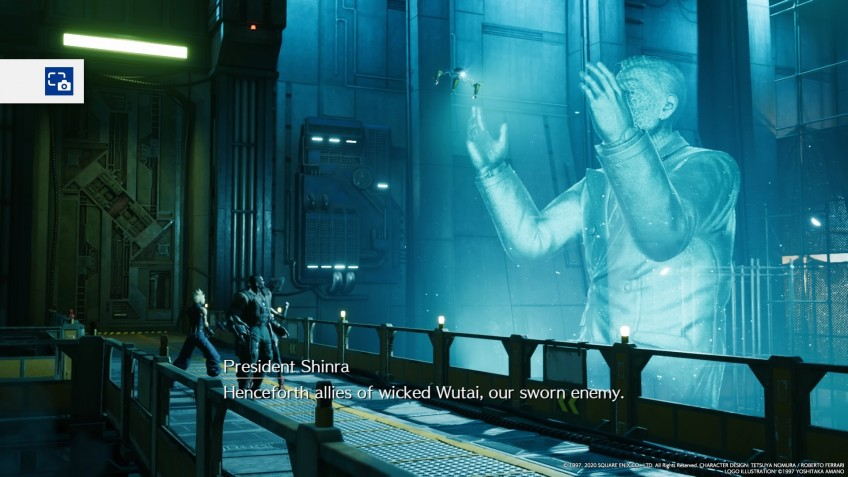

Статья
Рецензия на Final Fantasy VII Remake. You can(not) Rebuild
Final Fantasy VII — не просто великая игра. Это одно из тех произведений, что повлияли на мировую культуру, — как «Евангелион» или «Матрица». Впрочем, последние хорошо смотрятся и сейчас, в отличие от игр из девяностых. Седьмая «финалка», которая тогда слыла зрелищным блокбастером, сегодня выглядит совсем несолидно.
Да и в геймдизайне тренды сейчас совсем иные: в моде большие бесшовные миры и динамичный экшен.
Поэтому, когда Square Enix наконец анонсировала ремейк Final Fantasy VII, было понятно, что простым улучшением графики дело не ограничится. Полная переработка коснулась абсолютно всех аспектов игры. И, вопреки опасениям фанатов, практически всё стало только лучше.
Вы (не) Грета
Несмотря на название, от фэнтези в седьмой «финалке» ничего нет — это самый настоящий киберпанк. Энергетическая корпорация «Шинра» подчинила себе большую часть мира. И умело манипулирует населением методами Оруэлла: проводит саботаж в своих же реакторах, винит во всём врагов из-за бугра и «пятую колонну», грозит очередной победоносной войной. На её стороне — все новейшие технологии и все возможные ресурсы.

У «Шинры» много противников, но активнее всех «Аваланч», группировка эко-террористов, сражающихся не за власть, а за будущее своего мира. Они убеждены, что энергия, которую реакторы «Шинры» преобразуют в электричество, — это жизненные силы самой Планеты. Одни повстанцы устраивают покушения на президента «Шинры», а другие, более радикальные, планируют просто взорвать все её реакторы. С первой такой операции игра и начинается.
Главный герой FF7 по имени Клауд — бывший солдат «Шинры», а ныне наёмник. Он циник и нигилист, и ему нет никакого дела до убеждений террористов. В начале игры Клауда волнуют только их деньги и собственные призраки прошлого. С «Аваланчем» его свела Тифа, подруга детства, с которой он случайно встретился после долгой разлуки. Она заведует баром, в подвале которого как раз и находится штаб повстанцев.
А руководит ими Баррет — здоровяк с кибернетическим протезом: вместо правой руки у него установлен пулемёт. И, наконец, четвёртая героиня игры — цветочница Айрис. Она чисто случайно знакомится с остальными персонажами, однако для судьбы Планеты окажется гораздо важнее каких-то реакторов.
По своей структуре история очень линейная — впрочем, Мидгар и раньше был именно таким. Игра постоянно ведёт вперёд, не даёт заблудиться или заскучать, подкидывает всё новые и новые события. Даже в мирных сегментах, где можно отвлечься на побочные задания, мы не задержимся надолго. Сайдквесты тут довольно простенькие. Они проходятся быстро, рассказывают свои короткие и не особо интересные истории и многого от игрока не требуют.
Как правило — перепройти часть данжена и сразиться с опциональными врагами.
Номура (не) гений
По понятным причинам мы не будем рассказывать, как именно всё кончается, но финал определённо станет самой противоречивой частью игры. Причём как для фанатов оригинала, так и для тех, кто впервые познакомится с «семёркой» только сейчас: новички вообще вряд ли смогут понять, что произошло в конце, а знатоков FF7 ждёт… ну, как минимум, очень сильное недоумение.
Развязку предвещают серые призраки, которые следуют за героями на протяжении всей игры, практически с самого начала. Иногда они атакуют, а иногда — наоборот, защищают или помогают. Призраки работают по принципу deus ex machina — когда сюжету что-то нужно, они тут же прилетают и добиваются верного хода истории. К сожалению, это происходит слишком уж часто: в большинстве случаев можно было легко обойтись и без них, и повествование шло бы гораздо естественнее.
Final Fantasy VII заслуживала безупречного ремейка. И на протяжении большей части игры кажется, что она наконец его получила. Однако финал ставит большое и жирное «НО» поверх всех этих впечатлений.